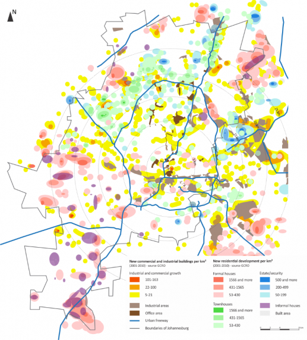
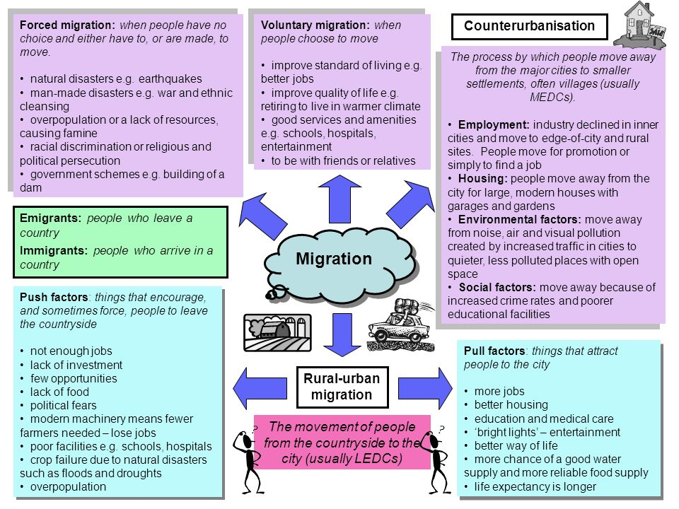
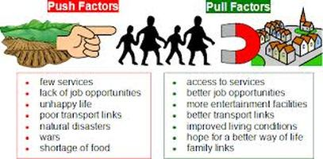

Urbanisation
Definition of Urbanisation
Urbanization is the population shift from rural to urban areas, the corresponding decrease in the proportion of people living in rural areas, and the ways in which societies adapt to this change. It can also mean population growth in urban areas instead of rural ones What is the urbanisa growth rate of Johannesburg?
The current metro area population of Johannesburg in 2023 is 6,198,000, a 2.19% increase from 2022. The metro area population of Johannesburg in 2022 was 6,065,000, a 2.33% increase from 2021. The metro area population of Johannesburg in 2021 was 5,927,000, a 2.49% increase from 2020
The Growth of the urban Settlement throughtout the years
-

Reasons for Urbanisation of the Settlement
The main causes of Urbanisation are:
Industrialization: More people have been attracted to move from rural to urban areas on account of improved employment opportunities.
Commercialization:Better commercial opportunities and returns compared to rural areas.
Social Benefits and Services: Urban areas provide better educational facilities, better living standards, better sanitation and housing, better health care, better recreation facilities, and better social life in general.
Employment Opportunities: Services and industries in urban areas generate and increase higher value-added jobs, and this leads to more employment opportunities.
Modernization and Changes in the Mode of Living: Availability of highly sophisticated communication, infrastructure, medical facilities, dressing code, enlightenment, liberalization, and other social amenities in urban areas make people believe that they can lead a happy life in cities.
Rural-urban Transformation: Rural communities start to adopt the urban culture and ultimately become urban centres that continue to grow as more people move to such locations in search of a better life
PULL & PUSH
Pull factors in migration are factors that attract people to urban areas, e.g. good employment opportunities in cities. Push factors in migration are factors that drive people from the countryside, e.g. lack of sufficiently productive land to make a good living.
 